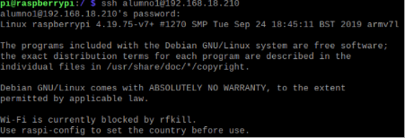

PASO 1
Instalar servidor SSH en linux y comprobar que se escucha el puerto 22.
PASO 2
Crear dos usuarios denominados usuario1 y usuario2.
PASO 3
Comprobar que podemso acceder mendiante ssh a estos usuarios.
PASO 4
Cambiar de puerto del servidor e intentar acceder de nuevo
PASO 5.1
Cambiar configuracion del servidor para acceder con el usr1 y no con el usr2
PASO 5.2
Comprobar el acceso
PASO 6
Cambiar la configuracion para que solo pueda acceder una IP determinada.
PASO 7
Comprobar en Wireshark que los paquetes estas encriptados